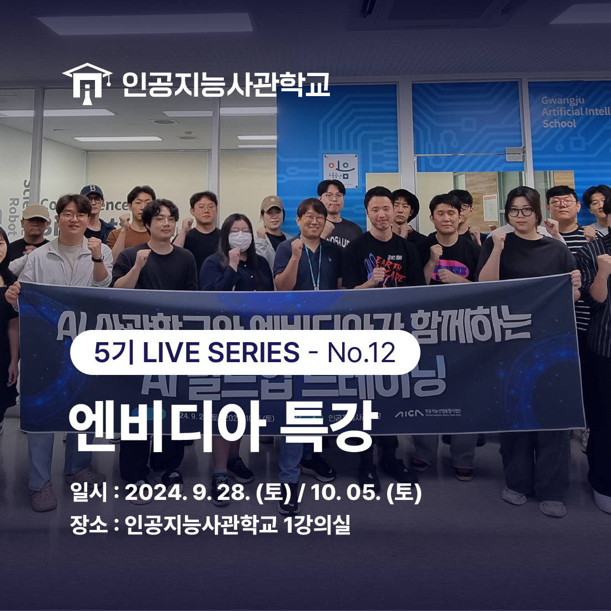
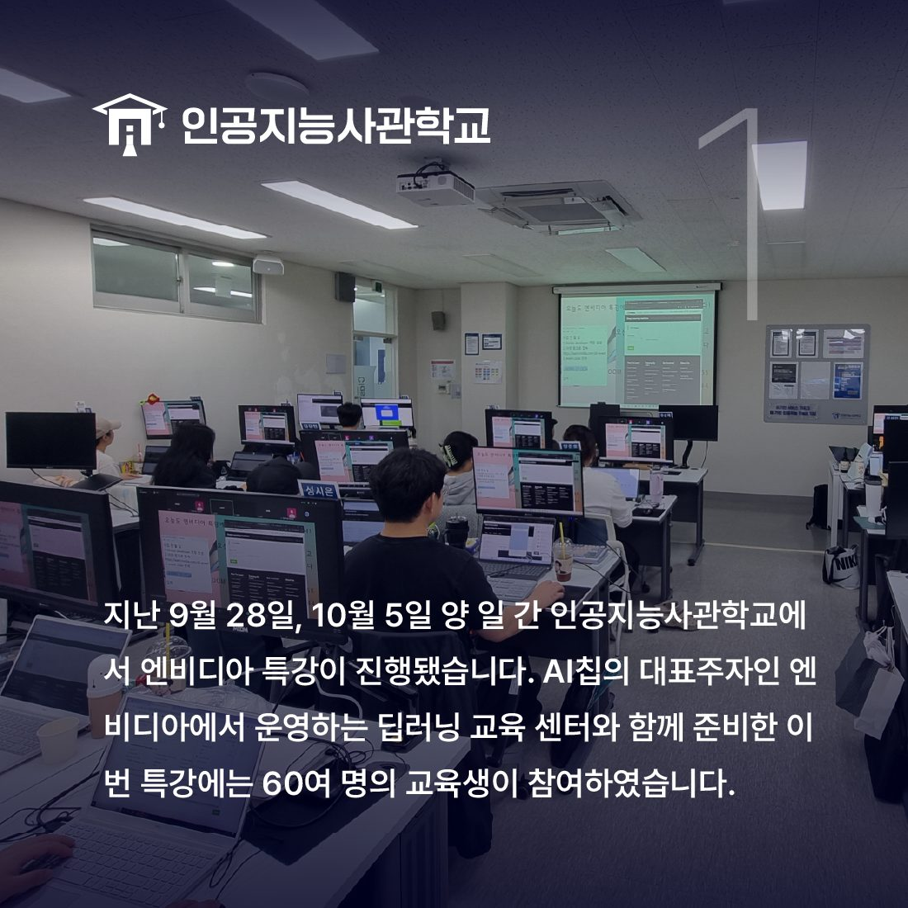
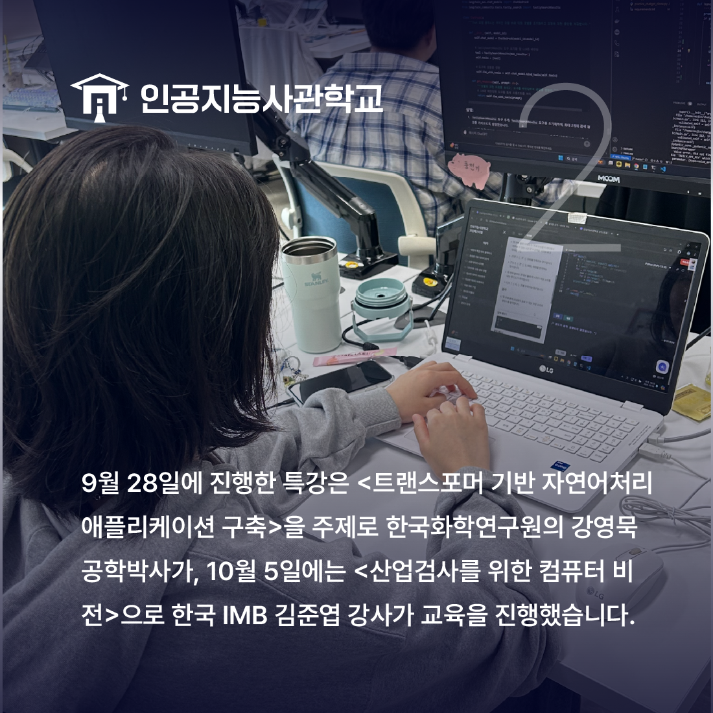
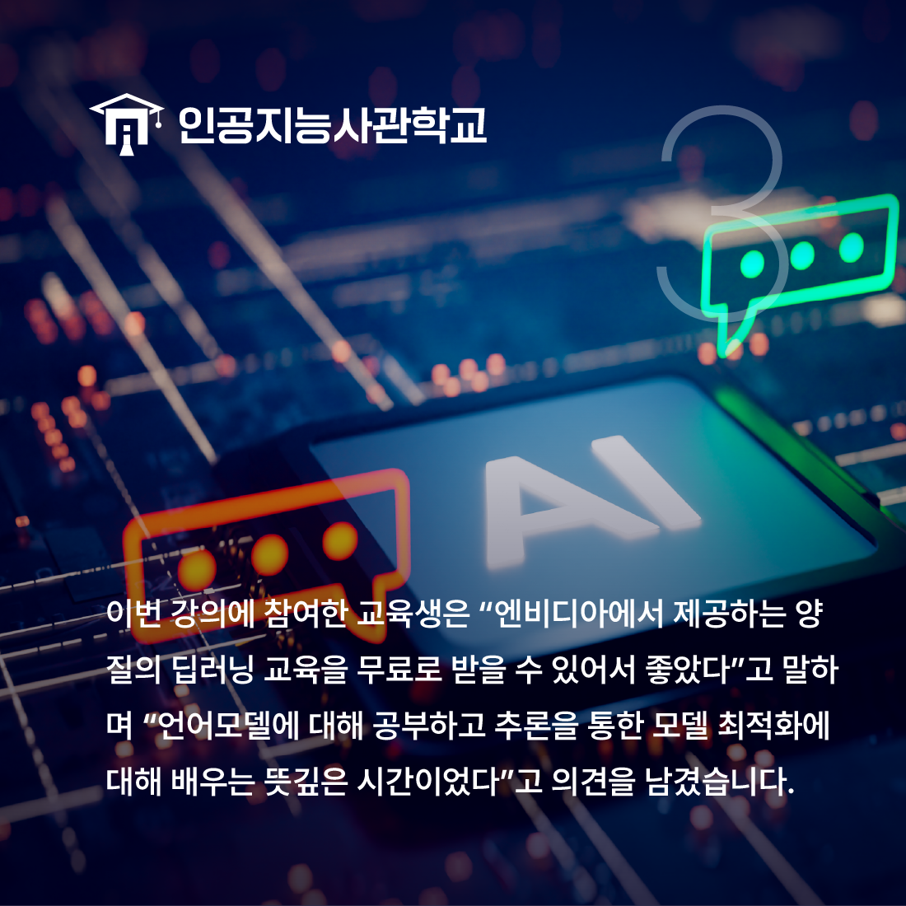

안녕하세요! 인공지능사관학교입니다. 😆

지난 9월 28일과 10월 5일,
인공지능사관학교에서는<엔비디아 특강>이 열렸습니다.

이번 특강은 이틀 간 10시부터 17시까지 진행되었으며
60여 명의 교육생이 참여하였습니다.
특강의 주제는 아래와 같습니다.
▶9/28 - 트랜스포머 기반 자연어 처리 애플리케이션 구축
▶10/5 - 산업검사를 위한 컴퓨터 비전

<트랜스포머 기반 자연어 처리 애플리케이션 구축> 특강은
NLP 모델 활용과 더불어 언어 모델 생성에 대해
한국화학연구원 강영묵 공학박사가,
<산업검사를 위한 컴퓨터 비전>은
전이학습 및 딥러닝 미세조정에 대해
IMB 김준엽 강사가 교육을 진행했습니다.

이번 특강에 참여한 교육생은 "엔비디아의
양질의 교육을 받을 수 있어 좋았다"며
"언어모델 및 딥러닝 모델 활용에 대해 알 수 있는
뜻깊은 시간이었다"고 말했습니다.